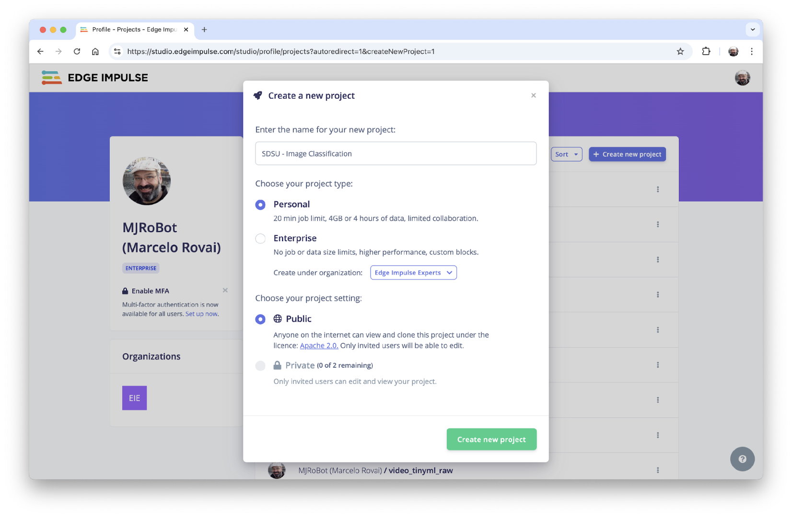
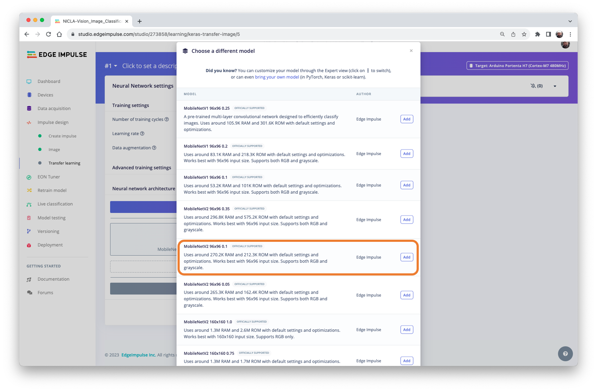
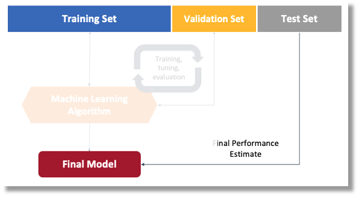
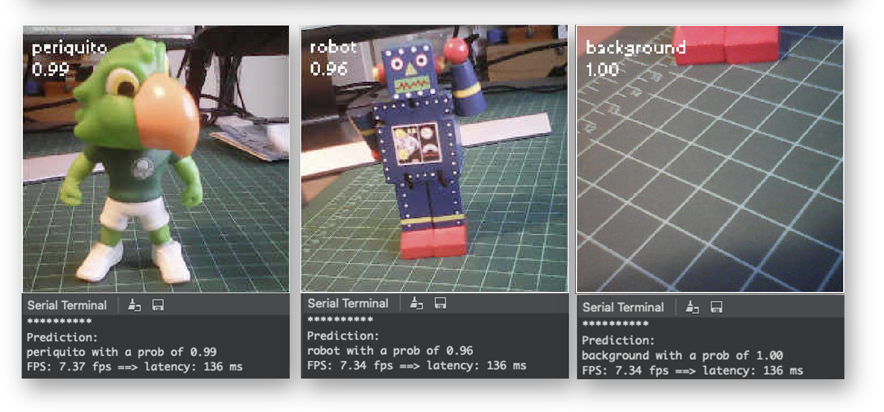

Image Classification
Overview
As we initiate our studies into embedded machine learning or TinyML, it’s impossible to overlook the transformative impact of Computer Vision (CV) and Artificial Intelligence (AI) in our lives. These two intertwined disciplines redefine what machines can perceive and accomplish, from autonomous vehicles and robotics to healthcare and surveillance.
More and more, we are facing an artificial intelligence (AI) revolution where, as stated by Gartner, Edge AI has a very high impact potential, and it is for now!
In the “bullseye” of the Radar is the Edge Computer Vision, and when we talk about Machine Learning (ML) applied to vision, the first thing that comes to mind is Image Classification, a kind of ML “Hello World”!
This lab will explore a computer vision project utilizing Convolutional Neural Networks (CNNs) for real-time image classification. Leveraging TensorFlow’s robust ecosystem, we’ll implement a pre-trained MobileNet model and adapt it for edge deployment. The focus will be optimizing the model to run efficiently on resource-constrained hardware without sacrificing accuracy.
We’ll employ techniques like quantization and pruning to reduce the computational load. By the end of this tutorial, you’ll have a working prototype capable of classifying images in real-time, all running on a low-power embedded system based on the Arduino Nicla Vision board.
Computer Vision
At its core, computer vision enables machines to interpret and make decisions based on visual data from the world, essentially mimicking the capability of the human optical system. Conversely, AI is a broader field encompassing machine learning, natural language processing, and robotics, among other technologies. When you bring AI algorithms into computer vision projects, you supercharge the system’s ability to understand, interpret, and react to visual stimuli.
When discussing Computer Vision projects applied to embedded devices, the most common applications that come to mind are Image Classification and Object Detection.
Both models can be implemented on tiny devices like the Arduino Nicla Vision and used on real projects. In this chapter, we will cover Image Classification.
Image Classification Project Goal
The first step in any ML project is to define the goal. In this case, the goal is to detect and classify two specific objects present in one image. For this project, we will use two small toys: a robot and a small Brazilian parrot (named Periquito). We will also collect images of a background where those two objects are absent.
Data Collection
Once we have defined our Machine Learning project goal, the next and most crucial step is collecting the dataset. For image capturing, we can use:
- Web Serial Camera tool,
- Edge Impulse Studio,
- OpenMV IDE,
- A smartphone.
Here, we will use the OpenMV IDE.
Collecting Dataset with OpenMV IDE
First, we should create a folder on our computer where the data will be saved, for example, “data.” Next, on the OpenMV IDE, we go to Tools > Dataset Editor and select New Dataset to start the dataset collection:

The IDE will ask us to open the file where the data will be saved. Choose the “data” folder that was created. Note that new icons will appear on the Left panel.

Using the upper icon (1), enter with the first class name, for example, “periquito”:

Running the dataset_capture_script.py and clicking on the camera icon (2) will start capturing images:
Repeat the same procedure with the other classes.
We suggest around 50 to 60 images from each category. Try to capture different angles, backgrounds, and light conditions.
The stored images use a QVGA frame size of \(320\times 240\) and the RGB565 (color pixel format).
After capturing the dataset, close the Dataset Editor Tool on the Tools > Dataset Editor.
We will end up with a dataset on our computer that contains three classes: periquito, robot, and background.

We should return to Edge Impulse Studio and upload the dataset to our created project.
Training the model with Edge Impulse Studio
We will use the Edge Impulse Studio to train our model. Enter the account credentials and create a new project:

Here, you can clone a similar project: NICLA-Vision_Image_Classification.
Dataset
Using the EI Studio (or Studio), we will go over four main steps to have our model ready for use on the Nicla Vision board: Dataset, Impulse, Tests, and Deploy (on the Edge Device, in this case, the NiclaV).

Regarding the Dataset, it is essential to point out that our Original Dataset, captured with the OpenMV IDE, will be split into Training, Validation, and Test. The Test Set will be spared from the beginning and reserved for use only in the Test phase after training. The Validation Set will be used during training.
The EI Studio will take a percentage of training data to be used for validation
On Studio, go to the Data acquisition tab, and on the UPLOAD DATA section, upload the chosen categories files from your computer:

Leave to the Studio the splitting of the original dataset into train and test and choose the label about that specific data:

Repeat the procedure for all three classes.
Selecting a folder and upload all the files at once is possible.
At the end, you should see your “raw data” in the Studio:

Note that when you start to upload the data, a pop-up window can appear, asking if you are building an Object Detection project. Select [NO].

We can always change it in the Dashboard section: One label per data item (Image Classification):

Optionally, the Studio allows us to explore the data, showing a complete view of all the data in the project. We can clear, inspect, or change labels by clicking on individual data items. In our case, the data seems OK.

The Impulse Design
In this phase, we should define how to:
Pre-process our data, which consists of resizing the individual images and determining the
color depthto use (be it RGB or Grayscale) andSpecify a Model, in this case, it will be the
Transfer Learning (Images)to fine-tune a pre-trained MobileNet V2 image classification model on our data. This method performs well even with relatively small image datasets (around 150 images in our case).
Transfer Learning with MobileNet offers a streamlined approach to model training, which is especially beneficial for resource-constrained environments and projects with limited labeled data. MobileNet, known for its lightweight architecture, is a pre-trained model that has already learned valuable features from a large dataset (ImageNet).

By leveraging these learned features, you can train a new model for your specific task with fewer data and computational resources and yet achieve competitive accuracy.

This approach significantly reduces training time and computational cost, making it ideal for quick prototyping and deployment on embedded devices where efficiency is paramount.
Go to the Impulse Design Tab and create the impulse, defining an image size of 96x96 and squashing them (squared form, without cropping). Select Image and Transfer Learning blocks. Save the Impulse.

Image Pre-Processing
All the input QVGA/RGB565 images will be converted to 27,640 features \((96\times 96\times 3)\).

Press [Save parameters] and Generate all features:

Model Design
In 2007, Google introduced MobileNetV1, a family of general-purpose computer vision neural networks designed with mobile devices in mind to support classification, detection, and more. MobileNets are small, low-latency, low-power models parameterized to meet the resource constraints of various use cases. in 2018, Google launched MobileNetV2: Inverted Residuals and Linear Bottlenecks.
MobileNet V1 and MobileNet V2 aim at mobile efficiency and embedded vision applications but differ in architectural complexity and performance. While both use depthwise separable convolutions to reduce the computational cost, MobileNet V2 introduces Inverted Residual Blocks and Linear Bottlenecks to improve performance. These new features allow V2 to capture more complex features using fewer parameters, making it computationally more efficient and generally more accurate than its predecessor. Additionally, V2 employs a non-linear activation in the intermediate expansion layer. It still uses a linear activation for the bottleneck layer, a design choice found to preserve important information through the network. MobileNet V2 offers an optimized architecture for higher accuracy and efficiency and will be used in this project.
Although the base MobileNet architecture is already tiny and has low latency, many times, a specific use case or application may require the model to be even smaller and faster. MobileNets introduces a straightforward parameter \(\alpha\) (alpha) called width multiplier to construct these smaller, less computationally expensive models. The role of the width multiplier \(\alpha\) is that of thinning a network uniformly at each layer.
Edge Impulse Studio can use both MobileNetV1 (\(96\times 96\) images) and V2 (\(96\times 96\) or \(160\times 160\) images), with several different \(\alpha\) values (from 0.05 to 1.0). For example, you will get the highest accuracy with V2, \(160\times 160\) images, and \(\alpha=1.0\). Of course, there is a trade-off. The higher the accuracy, the more memory (around 1.3 MB RAM and 2.6 MB ROM) will be needed to run the model, implying more latency. The smaller footprint will be obtained at the other extreme with MobileNetV1 and \(\alpha=0.10\) (around 53.2 K RAM and 101 K ROM).
We will use MobileNetV2 96x96 0.1 ( or 0.05) for this project, with an estimated memory cost of 265.3 KB in RAM. This model should be OK for the Nicla Vision with 1MB of SRAM. On the Transfer Learning Tab, select this model:

Model Training
Another valuable technique to be used with Deep Learning is Data Augmentation. Data augmentation is a method to improve the accuracy of machine learning models by creating additional artificial data. A data augmentation system makes small, random changes to your training data during the training process (such as flipping, cropping, or rotating the images).
Looking under the hood, here you can see how Edge Impulse implements a data Augmentation policy on your data:
# Implements the data augmentation policy
def augment_image(image, label):
# Flips the image randomly
image = tf.image.random_flip_left_right(image)
# Increase the image size, then randomly crop it down to
# the original dimensions
resize_factor = random.uniform(1, 1.2)
new_height = math.floor(resize_factor * INPUT_SHAPE[0])
new_width = math.floor(resize_factor * INPUT_SHAPE[1])
image = tf.image.resize_with_crop_or_pad(image, new_height,
new_width)
image = tf.image.random_crop(image, size=INPUT_SHAPE)
# Vary the brightness of the image
image = tf.image.random_brightness(image, max_delta=0.2)
return image, labelExposure to these variations during training can help prevent your model from taking shortcuts by “memorizing” superficial clues in your training data, meaning it may better reflect the deep underlying patterns in your dataset.
The final layer of our model will have 12 neurons with a 15% dropout for overfitting prevention. Here is the Training result:

The result is excellent, with 77 ms of latency (estimated), which should result in around 13 fps (frames per second) during inference.
Model Testing

Now, we should take the data set put aside at the start of the project and run the trained model using it as input:

The result is, again, excellent.

Deploying the model
At this point, we can deploy the trained model as a firmware (FW) and use the OpenMV IDE to run it using MicroPython, or we can deploy it as a C/C++ or an Arduino library.

Arduino Library
First, Let’s deploy it as an Arduino Library:
We should install the library as.zip on the Arduino IDE and run the sketch nicla_vision_camera.ino available in Examples under the library name.
Note that Arduino Nicla Vision has, by default, 512 KB of RAM allocated for the M7 core and an additional 244 KB on the M4 address space. In the code, this allocation was changed to 288 kB to guarantee that the model will run on the device (
malloc_addblock((void*)0x30000000, 288 * 1024);).
The result is good, with 86 ms of measured latency.

Here is a short video showing the inference results:
OpenMV
It is possible to deploy the trained model to be used with OpenMV in two ways: as a library and as a firmware (FW). Choosing FW, the Edge Impulse Studio generates optimized models, libraries, and frameworks needed to make the inference. Let’s explore this option.
Select OpenMV Firmware on the Deploy Tab and press [Build].
On the computer, we will find a ZIP file. Open it:
Use the Bootloader tool on the OpenMV IDE to load the FW on your board (1):
Select the appropriate file (.bin for Nicla-Vision):

After the download is finished, press OK:

If a message says that the FW is outdated, DO NOT UPGRADE. Select [NO].
Now, open the script ei_image_classification.py that was downloaded from the Studio and the.bin file for the Nicla.
Run it. Pointing the camera to the objects we want to classify, the inference result will be displayed on the Serial Terminal.
The classification result will appear at the Serial Terminal. If it is dificult to read the result, include a new line in the code to add some delay:
import time
While True:
...
time.sleep_ms(200) # Delay for .2 secondChanging the Code to add labels
The code provided by Edge Impulse can be modified so that we can see, for test reasons, the inference result directly on the image displayed on the OpenMV IDE.
Upload the code from GitHub, or modify it as below:
# Marcelo Rovai - NICLA Vision - Image Classification
# Adapted from Edge Impulse - OpenMV Image Classification Example
# @24March25
import sensor
import time
import ml
sensor.reset() # Reset and initialize the sensor.
sensor.set_pixformat(sensor.RGB565) # Set pixel format to RGB565 (or GRAYSCALE)
sensor.set_framesize(sensor.QVGA) # Set frame size to QVGA (320x240)
sensor.set_windowing((240, 240)) # Set 240x240 window.
sensor.skip_frames(time=2000) # Let the camera adjust.
model = ml.Model("trained")#mobilenet, load_to_fb=True)
clock = time.clock()
while True:
clock.tick()
img = sensor.snapshot()
fps = clock.fps()
lat = clock.avg()
print("**********\nPrediction:")
# Combines labels & confidence into a list of tuples and then
# sorts that list by the confidence values.
sorted_list = sorted(
zip(model.labels, model.predict([img])[0].flatten().tolist()),
key=lambda x: x[1], reverse=True
)
# Print only the class with the highest probability
max_val = sorted_list[0][1]
max_lbl = sorted_list[0][0]
if max_val < 0.5:
max_lbl = 'uncertain'
print("{} with a prob of {:.2f}".format(max_lbl, max_val))
print("FPS: {:.2f} fps ==> latency: {:.0f} ms".format(fps, lat))
# Draw the label with the highest probability to the image viewer
img.draw_string(
10, 10,
max_lbl + "\n{:.2f}".format(max_val),
mono_space = False,
scale=3
)
time.sleep_ms(500) # Delay for .5 secondHere you can see the result:

Note that the latency (136 ms) is almost double of what we got directly with the Arduino IDE. This is because we are using the IDE as an interface and also the time to wait for the camera to be ready. If we start the clock just before the inference, the latency should drop to around 70 ms.
The NiclaV runs about half as fast when connected to the IDE. The FPS should increase once disconnected.
Post-Processing with LEDs
When working with embedded machine learning, we are looking for devices that can continually proceed with the inference and result, taking some action directly on the physical world and not displaying the result on a connected computer. To simulate this, we will light up a different LED for each possible inference result.

To accomplish that, we should upload the code from GitHub or change the last code to include the LEDs:
# Marcelo Rovai - NICLA Vision - Image Classification with LEDs
# Adapted from Edge Impulse - OpenMV Image Classification Example
# @24Aug23
import sensor, time, ml
from machine import LED
ledRed = LED("LED_RED")
ledGre = LED("LED_GREEN")
ledBlu = LED("LED_BLUE")
sensor.reset() # Reset and initialize the sensor.
sensor.set_pixformat(sensor.RGB565) # Set pixel format to RGB565 (or GRAYSCALE)
sensor.set_framesize(sensor.QVGA) # Set frame size to QVGA (320x240)
sensor.set_windowing((240, 240)) # Set 240x240 window.
sensor.skip_frames(time=2000) # Let the camera adjust.
model = ml.Model("trained")#mobilenet, load_to_fb=True)
ledRed.off()
ledGre.off()
ledBlu.off()
clock = time.clock()
def setLEDs(max_lbl):
if max_lbl == 'uncertain’:
ledRed.on()
ledGre.off()
ledBlu.off()
if max_lbl == 'periquito’:
ledRed.off()
ledGre.on()
ledBlu.off()
if max_lbl == 'robot’:
ledRed.off()
ledGre.off()
ledBlu.on()
if max_lbl == 'background’:
ledRed.off()
ledGre.off()
ledBlu.off()
while True:
img = sensor.snapshot()
clock.tick()
fps = clock.fps()
lat = clock.avg()
print("**********\nPrediction:")
sorted_list = sorted(
zip(model.labels, model.predict([img])[0].flatten().tolist()),
key=lambda x: x[1], reverse=True
)
# Print only the class with the highest probability
max_val = sorted_list[0][1]
max_lbl = sorted_list[0][0]
if max_val < 0.5:
max_lbl = 'uncertain'
print("{} with a prob of {:.2f}".format(max_lbl, max_val))
print("FPS: {:.2f} fps ==> latency: {:.0f} ms".format(fps, lat))
# Draw the label with the highest probability to the image viewer
img.draw_string(
10, 10,
max_lbl + "\n{:.2f}".format(max_val),
mono_space = False,
scale=3
)
setLEDs(max_lbl)
time.sleep_ms(200) # Delay for .2 secondNow, each time that a class scores a result greater than 0.8, the correspondent LED will be lit:
Led Red 0n: Uncertain (no class is over 0.8)
Led Green 0n: Periquito > 0.8
Led Blue 0n: Robot > 0.8
All LEDs Off: Background > 0.8
Here is the result:

In more detail
Image Classification (non-official) Benchmark
Several development boards can be used for embedded machine learning (TinyML), and the most common ones for Computer Vision applications (consuming low energy), are the ESP32 CAM, the Seeed XIAO ESP32S3 Sense, the Arduino Nicla Vison, and the Arduino Portenta.

Catching the opportunity, the same trained model was deployed on the ESP-CAM, the XIAO, and the Portenta (in this one, the model was trained again, using grayscaled images to be compatible with its camera). Here is the result, deploying the models as Arduino’s Library:
Conclusion
Before we finish, consider that Computer Vision is more than just image classification. For example, you can develop Edge Machine Learning projects around vision in several areas, such as:
Autonomous Vehicles: Use sensor fusion, lidar data, and computer vision algorithms to navigate and make decisions.
Healthcare: Automated diagnosis of diseases through MRI, X-ray, and CT scan image analysis
Retail: Automated checkout systems that identify products as they pass through a scanner.
Security and Surveillance: Facial recognition, anomaly detection, and object tracking in real-time video feeds.
Augmented Reality: Object detection and classification to overlay digital information in the real world.
Industrial Automation: Visual inspection of products, predictive maintenance, and robot and drone guidance.
Agriculture: Drone-based crop monitoring and automated harvesting.
Natural Language Processing: Image captioning and visual question answering.
Gesture Recognition: For gaming, sign language translation, and human-machine interaction.
Content Recommendation: Image-based recommendation systems in e-commerce.